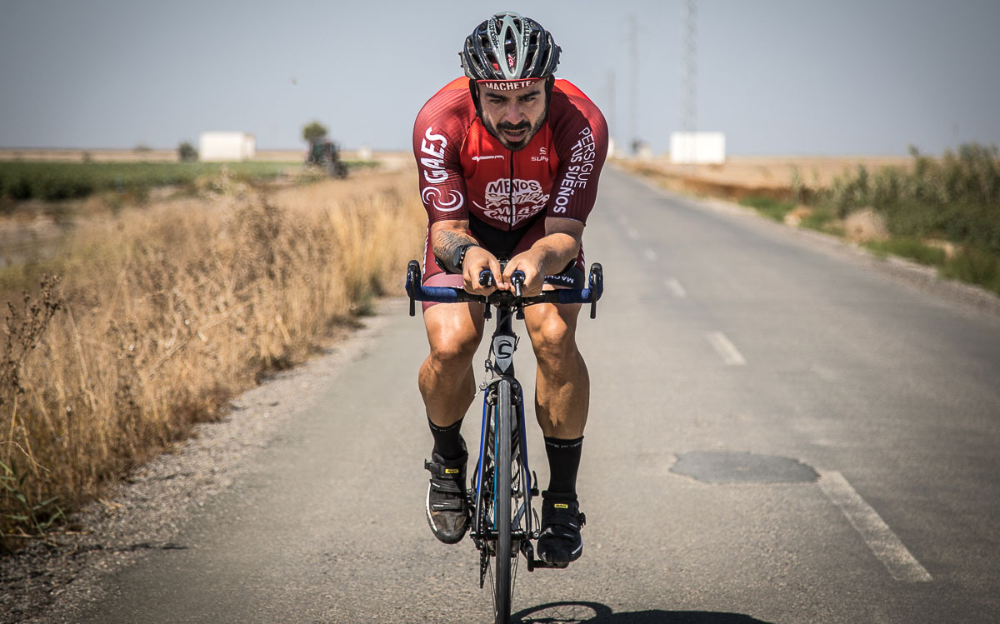
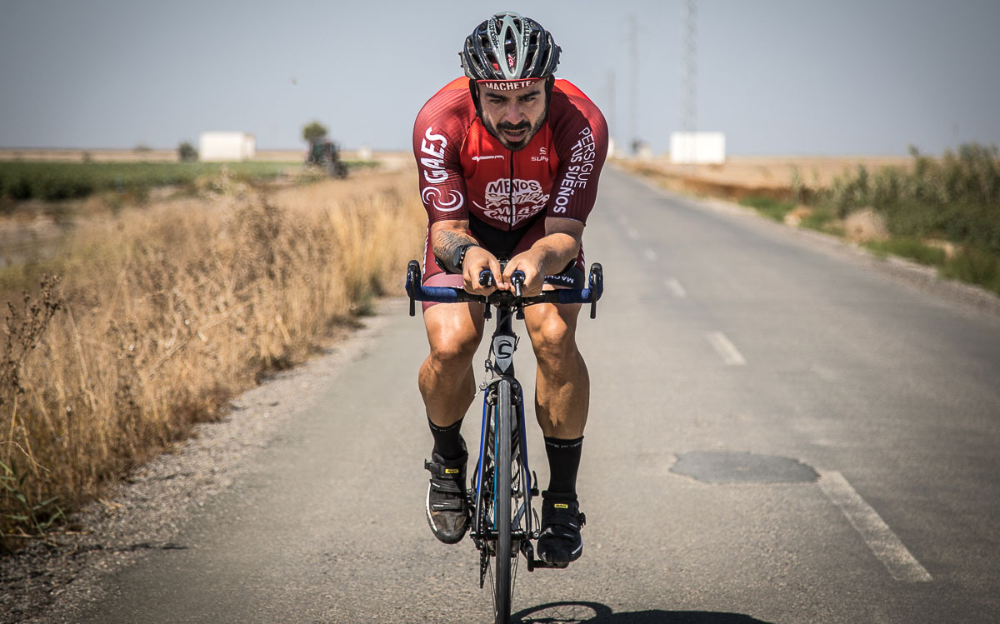

Valentin San Juan
UN EXGORDO QUE SE LEVANTÓ DEL SOFÁ
Hace 10 años, y con 20 kilitos más que ahora, un día decidí que tenía que levantarme del sofá. Bueno, para ser exactos, lo decidió la vida por mí. En cosa de 8 meses, mi madre murió por un cáncer fulminante, me echaron del trabajo y me dejó la novia. Estando completamente arruinado y debiéndole 10 meses de hipoteca al banco, cuando me despertaba a las 3 de la madrugada con ataques de ansiedad, lo único que me ayudaba era salir a correr. Primero tres kilómetros. Luego seis. Y luego Ironmans, Ultramans, y carreras de hasta 55 horas y 770 kilómetros non stop.
CHARLAS
Quizás por ser periodista, o porque no sé callarme ni debajo del agua, nos han solicitado muchas charlas para contar nuestra experiencia delante del público. De momento llevamos alrededor de 200 charlas con unos 60.000 asistentes por todo el mundo: España, México, Colombia, Argentina, Ecuador, Marruecos, Cuba, Portugal… y hasta Taiwan!
Charlas para TEDx, eventos motivacionales para empresas, proyecciones y presentación de nuestros documentales, formación de márketing online, presentador de ceremonias, entregas de premios… y hasta profesor universitario! De todo esto hemos hecho, así que si requieres de nuestros servicios, contáctanos!
¿QUIÉN ES EL JABALÍ?
Siempre me cuesta mucho explicarle quién soy a alguien que no me conoce. Resumiendo mucho, creo que soy un flipado que hace vídeos mientras practica deporte extremo por el mundo que, a día de hoy, por sus redes sociales, llega a un millón de personas todavía más flipados que él. El tío que corrió 10 ironmans en 10 días. El que lleva 8 Titan Desert en Marruecos, Cuba o Arabia Saudí. O el que recorrió 770km en MTB sin parar a dormir desde Madrid hasta Lisboa. O el que va a hacer 5 Ultramans en 5 semanas.
Justamente la carrera que más palote me pone es el Ultraman, un triatlón de ultradistancia en el que primero nadas 10 kilómetros, luego pedaleas otros 425 kilometrillos y para rematarlo, hala, te cascas corriendo un doble maratón, o sea, 84,4 kilometrillos para ese cuerpo serrano. Hasta la fecha hemos logrado tres podios, con un tercer lugar en el Ultraman de México, un segundo lugar en el Ultraman Toroman, y otro segundo en el Ultraman de Gales.
¿QUÉ HAGO?
Por el camino van unos 1.000 vídeos y 10 documentales, más de 100 millones de reproducciones en Youtube, y carreras preciosas y duras como Marathon Des Sables, Cape Epic, Leyenda del Dorado o Ultra Fiord, que nos han llevado a países como Mongolia, Taiwan, Sudáfrica, Patagonia, Ecuador, Colombia, India, Costa Rica, Argentina, Uruguay, Estados Unidos, Turquía, España, Andorra,….
Aunque esto que suena tan épico no son más que nombres y números en una estantería, pero no en el corazón. Si con algo me quedo es con las personas que conocí en todos estos desafíos. Cuerpos sin piernas que hacían esas mismas carreras que yo con una sonrisa. Personas que habían tenido que superar dos cánceres y que ahora se enfrentaban al desierto. Mujeres que peleaban en bici para salvar la vida de su hijo enfermo. Y esta vida me enganchó: la vida de esos que decidieron vivir. Sin condiciones. Sin límites. Sin excusas. Sin otra opción. Y sin sofá.
Documental VUELTA MADRID NON STOP | Valentí Sanjuan
DOCUMENTAL ULTRAMAN TOROMAN | Valentí Sanjuan
Documental TITAN DESERT 2020
Documental CAPE EPIC 2018: Sanjuan, Zugasti, Barri, Losada, Purito
Galeria

 
